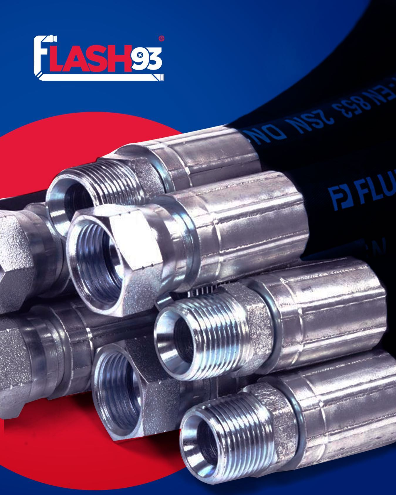
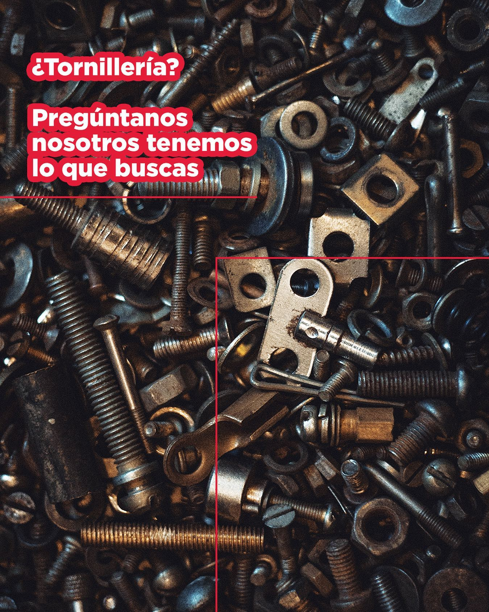

MANGUERAS
ENSAMBLE DE ALTA PRESIÓN
ENSAMBLE DE MEDIA PRESIÓ
ENSAMBLE DE BAJA PRESIÓN

ENSAMBLE DE ALTA PRESIÓN
ENSAMBLE DE MEDIA PRESIÓ
ENSAMBLE DE BAJA PRESIÓN
Tipos de mangueras hidráulicas En lo referente a conexiones hidráulicas podemos encontrar diferentes tipos o clases, todas referentes a su presión, entre las que destacamos cuatro: las mangueras hidráulicas de alta presión, de baja presión, de mediana presión y de extrema presión. Están presentes en diferentes sectores como la industria automotriz, la industria marina, de la construcción… Cada una de ellas tiene unas aplicaciones que le comentaremos a continuación.